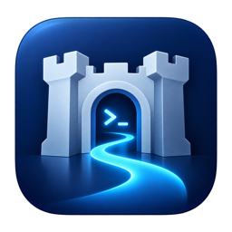

BastionautAbre una incidencia en GitHub contando qué ha pasado. Si puedes, copia el mensaje de error y las últimas líneas de la Bitácora 📜 de la conexión (sin OCID ni IP que no quieras compartir).
Open an issue on GitHub describing what happened. If you can, include the error message and the last lines of the connection's Activity log 📜 (leave out any OCIDs or IPs you'd rather not share).
Abrir una incidenciaOpen an issue
💡 La app trae su propia ayuda: menú Ayuda › Ayuda de Bastionaut (⌘?).
💡 The app has built-in help: Help › Bastionaut Help (⌘?).
Casi siempre es la lista de IPs permitidas del Bastion. Pulsa ¿Está permitida mi IP? 🌐 en la app y, si no lo está, añádela en la consola de OCI › Bastion › Editar. Si sales por un proxy o una VPN, cuenta la IP de salida.
La clave de API no está registrada en tu usuario de OCI, es de otro usuario, o la hora del Mac está desajustada.
Falta algún permiso IAM o el Bastion no está en la región elegida. Un ejemplo de política:
Allow group BastionUsers to use bastion in compartment MiCompartimento Allow group BastionUsers to manage bastion-session in compartment MiCompartimento Allow group BastionUsers to read virtual-network-family in compartment MiCompartimento Allow group BastionUsers to read instance-family in compartment MiCompartimento
Usa el modo Reenvío de puerto (Ajustes ⚙️), que funciona con cualquier Bastion, o activa «FQDN y SOCKS5» en el Bastion.
La clave elegida para ese servidor no está autorizada en él, o el usuario no es el correcto (opc en Oracle Linux, ubuntu en Ubuntu).
Solo en tu Mac: la clave de API en el Llavero y el resto en la carpeta privada de la app. Mira la política de privacidad.
It's almost always the bastion's allowed IP list. Press Is my IP allowed? 🌐 in the app and, if it isn't, add it in the OCI console › Bastion › Edit. If you go through a proxy or VPN, its egress IP is what counts.
The API key isn't registered on your OCI user, belongs to another user, or your Mac's clock is off.
An IAM permission is missing or the bastion isn't in the selected region. A sample policy:
Allow group BastionUsers to use bastion in compartment MyCompartment Allow group BastionUsers to manage bastion-session in compartment MyCompartment Allow group BastionUsers to read virtual-network-family in compartment MyCompartment Allow group BastionUsers to read instance-family in compartment MyCompartment
Use Port forwarding mode (Settings ⚙️), which works with any bastion, or enable "FQDN and SOCKS5" on the bastion.
The key you picked for that server isn't authorized on it, or the user is wrong (opc on Oracle Linux, ubuntu on Ubuntu).
Only on your Mac: the API key in the Keychain and everything else in the app's private folder. See the privacy policy.